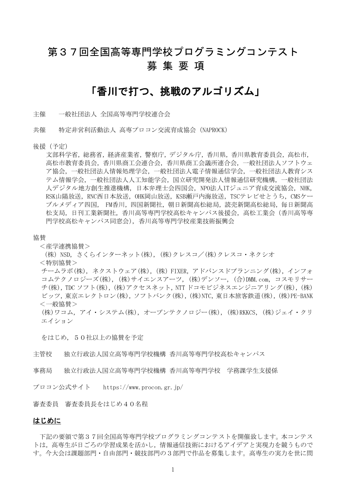

募集要項 p.1
原ページ画像を表示（クリックで拡大）

抽出テキスト全文を表示
第３７回全国高等専門学校プログラミングコンテスト
募 集 要 項
「香川で打つ、挑戦のアルゴリズム」
主催 一般社団法人 全国高等専門学校連合会
共催 特定非営利活動法人 高専プロコン交流育成協会（NAPROCK）
後援（予定）
文部科学省，総務省，経済産業省，警察庁，デジタル庁，香川県，香川県教育委員会，高松市，
高松市教育委員会，香川県商工会連合会，香川県商工会議所連合会，一般社団法人ソフトウェ
ア協会，一般社団法人情報処理学会，一般社団法人電子情報通信学会，一般社団法人教育シス
テム情報学会，一般社団法人人工知能学会，国立研究開発法人情報通信研究機構，一般社団法
人デジタル地方創生推進機構，日本弁理士会四国会，NPO法人ITジュニア育成交流協会，NHK，
RSK山陽放送，RNC西日本放送，OHK岡山放送，KSB瀬戸内海放送，TSCテレビせとうち，CMSケー
ブルメディア四国， FM香川，四国新聞社，朝日新聞高松総局，読売新聞高松総局，毎日新聞高
松支局，日刊工業新聞社，香川高等専門学校高松キャンパス後援会，高松工業会（香川高等専
門学校高松キャンパス同窓会），香川高等専門学校産業技術振興会
協賛
＜産学連携協賛＞
（株）NSD，さくらインターネット(株)，(株)クレスコ／(株)クレスコ・ネクシオ
＜特別協賛＞
チームラボ(株), ネクストウェア(株)，（株）FIXER，アドバンスドプランニング(株)，インフォ
コムテクノロジーズ(株)，(株)サイエンスアーツ，(株)デンソー，(合)DMM.com，コスモリサー
チ(株)，TDC ソフト(株)，(株)アクセスネット，NTT ドコモビジネスエンジニアリング(株)，(株)
ビッツ，東京エレクトロン(株)，ソフトバンク(株)，(株)NTC，東日本旅客鉄道(株)，(株)PE-BANK
＜一般協賛＞
(株)ワコム，アイ・システム(株)，オープンテクノロジー(株)，(株)RKKCS，(株)ジェイ・クリ
エイション
をはじめ，５０社以上の協賛を予定
主管校 独立行政法人国立高等専門学校機構 香川高等専門学校高松キャンパス
事務局 独立行政法人国立高等専門学校機構 香川高等専門学校 学務課学生支援係
プロコン公式サイト https://www.procon.gr.jp/
審査委員 審査委員長をはじめ４０名程
はじめに
下記の要領で第３７回全国高等専門学校プログラミングコンテストを開催致します。本コンテス
トは，高専生が日ごろの学習成果を活かし，情報通信技術におけるアイデアと実現力を競うもので
す。今大会は課題部門・自由部門・競技部門の３部門で作品を募集します。高専生の実力を世に問
1